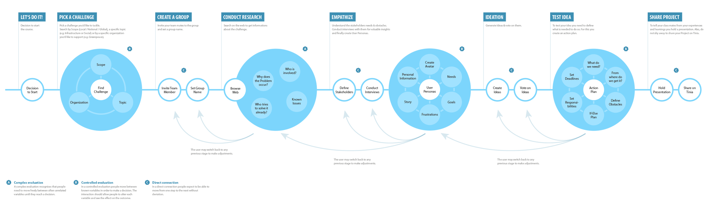
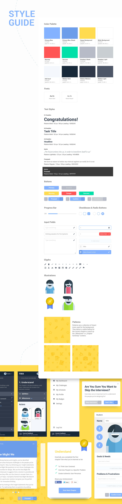

Opportunities and Challenges of E-Learning
Individual learning types
Through self-learning systems, the learning process can be individually adapted for each student. Studies have shown, for example, that students who were considered weak in the classroom, after a short time with adaptive, tailor-made curricula many were even better than the previous best in class. These students simply needed more time for the basics, which then led to better and faster understanding of the more complex follow-up topics.
Timeliness & availability
Outdated or incorrect information can be updated at any time. Textbooks would therefore be obsolete and materials could no longer be forgotten or lost at home. Insofar as there is sufficient Internet access, global availability is possible.
Self-organized learning
Through the on-demand availability, self-organization regarding time, place and topic becomes possible. The pure transfer of knowledge (know-how) takes place digitally, which gives the teacher more time to offer individual advice and orientation (Know Why). The knowledge broker role of the teacher shifts into the background in favor of the role as the student‘s companion and guide.
Interactivity and multimedia
Possibilities of interactivity and multimedia, through playful exploration of context, higher engagement, direct feedback and more empathy (for example about technologies such as Virtual Reality or the possibility to communicate easily with affected persons).
Lower costs
There is no cost to buy textbooks, which will also make it easier for financially weak families to access education. In addition, e-learning contributes to the saving of financial, human and time resources, i.a. by simplifying various processes for schools, teachers and students.
Automated learning success control
Students receive immediate feedback and can work with teachers and parents to follow their learning process. There is a risk of over-control and thus less self-organized learning, but also the chance to measure one's own learning progress less with other students and instead with one's own progress.
Challenges
Lack of acceptance
Low acceptance of the teaching staff (and some parents), since a change of teaching methodologies and, in general, often also a change in attitudes, including e.g. a higher level of trust is required.
Bad Infrastructure
Reasonable infrastructure, ie a stable Wifi and high-performance terminals are needed.
Isolated Learning
The high availability and flexibility results in less exchange with other learners and thus a weaker sense of community, which can lead to a loss of motivation in the long term.
Lack of media literacy
Success depends heavily on the respective IT and media literacy of teachers and learners.
Generally
Learning in the form of traditional teaching and e-learning both require self-discipline, motivation and acceptance of the methodology, whereby e-learning – in so far as it is used in isolation – relies more on intrinsic motivation.
Interviews & Surveys
With the knowledge of Design Thinking, E-Learning and the image of sustainable education according to ESD and the Sustainable Development Goals (SDG‘s) I conducted interviews with pupils and teachers from the grades five to thirteen.
Main task
- Which group constellation is preferred for the project work and why?
- What is the willingness to become active within the meaning of the SDGs?
- What support is desired from students and teachers?
- To what extent are digital tools already being used for learning?
- What about digitization at the respective school? What are the obstacles in school life?
To make sure that the redesign isn‘t based too much on old content respectively to gain a fresh point of view, I will add one or two extra steps in the future.
Findings
Students do not feel taken seriously
Students often do not feel taken seriously by teachers (and adults in general) and feel that they are unable to present their ideas to others.
Students want to have a noticeable influence
Many students think about local issues and many would seek a solution to them, as they are part of a motivated and "fit" group and their efforts have tangible impact.
Students hardly know local role models
Few of the students surveyed knew people from their environment who are committed to society. They repeatedly wished the teacher in this role. Are not these models or are the young people e.g. not sensitized?
Students are reluctant to work in groups
Group work is not liked, but this is mainly due to lack of motivation of individuals within the groups and different types of learning. Because individual performance is still often valued, it is all about fighters - slower learners stay behind while faster learners feel abandoned.
Technical Affinity: Usual Usage Scenarios
Even lower-level students can handle apps of a high degree of complexity, while educators often take much longer. One consequence is that teachers are judged by the students not to be competent. In an attempt to regain authority, teachers tend to use unfavorable methods, thus the teacher-student relationship suffers. Is the positioning of teachers as knowledge facilitators still relevant?
Bad infrastructure
Teachers would like to use more technology for educational purposes, but their school infrastructure is inadequate and there is a lack of easy-to-learn and helpful software. There are also regular room changes, unreliable technology and Internet connectivity, too few devices, hardly any maintenance of the technology, incompatibilities between programs and devices (e.g., smartboard not powerpoint enabled), and high setup times (e.g., slow build / install).
“I just use my private iPad, but reception is often missing, so I need to save content before showing it in the classroom.”
Prohibitions at schools
Most schools prohibit smartphones, offer open Wi-Fi, block mobile reception, and / or prohibit using private laptops or tablets in the classroom.
Inadequate media literacy
Teachers often say they enjoy using digital devices for their lessons, but they regularly experience hardware, software, and Internet connection issues that they do not have the knowledge to fix. Teachers want to keep up to date with modern teaching, but they do not feel comfortable with it and would Want training.
“The technology often does not work the way you want. A big time eater is troubleshooting.”
Technology aversion
Many teachers are critical of the use of digital devices because they perceive them as distracting. It needs new, more positive experiences.
“I think that the use of technical devices can be very distracting very quickly. The actual content will only be secondary.”
Generation difference in the use of digital tools
Great difference in the perception of students and teachers on how often digital devices are used for educational purposes. Students say the use of digital devices at their school is inadequate, while teachers feel they use them relatively frequently to make their lessons.
Building empathy
Using the quantitative and qualitative data from interviews and survey results, I defined the three target group profiles Peter (Teacher, 55), Sarah (Student, 16) and Tobias (Student, 13) to better empathize with my main user groups and prioritize goals according to their needs.

Structure Of The Course
Task Model
In order to visualize and make more tangible the individual steps that a user makes during the course and its possibilities, I have created a corresponding task model.
Information Architecture
Based on the insights gained from the initial content audits, competitor analyzes and Card Sorts with potential users, I defined the sitemap for TINIA and then evaluated it via tree tests with potential users.


Customer Experience Map
A product-based journey map helped to better understand the course phases as well as the user and their experience in them. The originally planned syllabus was greatly adapted as there were unnecessary and unfavorable steps coming to light.

Wireframing, Prototyping & Usability-Testing
Paper-Prototypes
With low-fidelity paper prototypes, the planned syllabus and the general structure of the application could easily be tested in usability tests. Without much effort, adjustments could be made before going into the much more costly digital implementation.

Paper prototype(PDF)
Clickable Prototypes
After some paper prototyping adjustments, wireframes, mid- and high-fidelity prototypes were created, which I supplemented with clickability using InVision. Again, user tests revealed small vulnerabilities in the structure of the user interface, in some formulations and interactions. In addition, the users asked smart questions, which led to further improvements.
VISUAL DESIGN
The visual design was developed by iterating from mood boards and styletiles to the UI kit and finally to creating a first version of the style guide.
A/B & Click Tests
To quantitatively review the usability assumptions, I did A/B and click tests, which confirmed my assumptions except for a few details. First and foremost, I tested the navigation structure on tablet and mobile, the wording of some actions as well as preferences regarding the visual design.

Conclusion
Digitization could revolutionize the entire education sector. Not for the sake of digitization, but because, as also highlighted in the research, thereby an important and profound social change is possible: The change from the teacher to the learning companion; as Gunther Dueck would say, “from the right to the true man”; from the rigid transfer of knowledge to the human companion through a time in need of orientation. In general, I see here the great opportunity of digitization, namely that it gives people the opportunity to become “more human” – a more empathetic, collaborative and social learning and working culture.
I completed the course in three instead of the normally planned nine months and chose my own project. Due to the complexity of the project that I chose and the demanding course plan, I was able to implement hardly any major adjustments to the concept in the short time. Also, the training provided a digital solution, where I can imagine as the first prototype also analogous materials to increase the acceptance and feasibility in schools.
Rather, it requires a change in attitudes and investment in a reliable technical infrastructure before the full potential of digital platforms such as TINIA can be harnessed. Of course, this is an interplay and requires digital solutions that are worth upgrading or questioning attitudes.
With the ambition to create a solution that can be adopted by schools, integrates sustainable development goals into school life and brings society and schools closer together, I was doomed to fail – the goal was far too vague and big. Also, I approached the project with too many strong ideas, which in retrospect was not conducive to reasonably responding to the research findings. My result is therefore rather an approximation and, above all, at the conceptual level requires further work, e.g. to facilitate a smarter group work.
It is also to be learned whether TINIA would prescribe a too strict course of Design Thinking, because Design Thinking is more of a mindset rather than a very concrete process (in terms of methods used). For this, it would need more experience from the field.
If there was more time available…
- Development of further user personas and Journey Maps / Task Models – in addition to the product-based Journey Map an experience-based Journey Map
- More research, as it‘s a complex and extensive topic with many factors (for example, technical and social challenges) and various stakeholders
- Further iterations / test phases, actually test the course plan in a real classroom
Learnings
#1 Big challenges require small steps
Take small steps, because big changes can not be brought overnight, especially not just by an application alone. Accordingly, develop more strategically meaningful and realistically applicable tools that steer in the intended direction.
#2 Be open to research and let ideas go
I thought too digitally and approached the product with too concrete ideas about the result, thus failing to correctly take into account some needs and challenges of the target group and thus unfavorably defined the minimum viable product.
#3 Journey Maps are my new best friend
Especially as it gets more complex, Journey mapping is very helpful, on the one hand to put a comprehensive process on paper and to uncover problematic and promising points, on the other hand to provide a basis for good cooperation for all stakeholders.
#4 Distribute polls via Facebook pages
More participation than expected, surprisingly many insights won and many answers to open questions received. Facebook pages with the appropriate fellowship and activity can quickly reach a relevant target group.
#5 Interview questions chosen unfavorably
Looking back, I would rebuild the interviews differently as I used too many questions where interviewees should imagine what the optimal solution might be (for example, “describe your dream school”). Especially through the book “The Mom Test” I have been able to uncover many of my mistakes. It would have needed further interviews with teachers and school management (as well as parents) to create a more complete picture.
#6 More substantive visual design
In the meantime, inasmuch as no visual language has yet been defined, I would define brand attributes in advance, which can be used to orient oneself with regard to the visual appearance as well as (linguistic) formulations – see my project for youth culture work.
There are already good analogue materials, which I would like to recommend at this point.
For example, "Build your future" provides very good materials to do design thinking projects in schools. It should be emphasized here that not only students, but primarily the teachers are very well taken by the hand and thus the inhibition threshold is lower to carry out such projects.
For an entertaining insight into the topic of Design Thinking, e.g. suitable for single lessons, Molly's Design Dash is great, especially if you replace the predefined topics with real school challenges and the opportunity to work on the projects beyond school time.
Rather with high school students in mind, there would be the Models of Impact Game, where based on societal challenges, social entrepreneurial business models are developed.

Find Me On Socials
Have any suggestion or interested in working together on a project?
Go ahead, I'd love to be social with you.
© Designed and Developed With Love By Lulamile Mkhungela